Benchmarking#
Buckfast Benchmarking#
Results from BuckPy have been benchmarked against results from Buckfast for example A of the Buckfast manual and good agreement has been obtained. The comparison is presented in the following subplots:
Row 1: This subplot compares the probabilities of buckling.
Row 2: This subplot compares the characteristic VAS.
Row 3: This subplot compares the effective axial force profiles determined using the mean axial friction factor and the mean critical buckling force.
Row 4: This subplot compares the number of buckles.
Row 5: This subplot presents the output from BuckPy. In particular, the difference between buckle and geotechnical frictions can be seen.
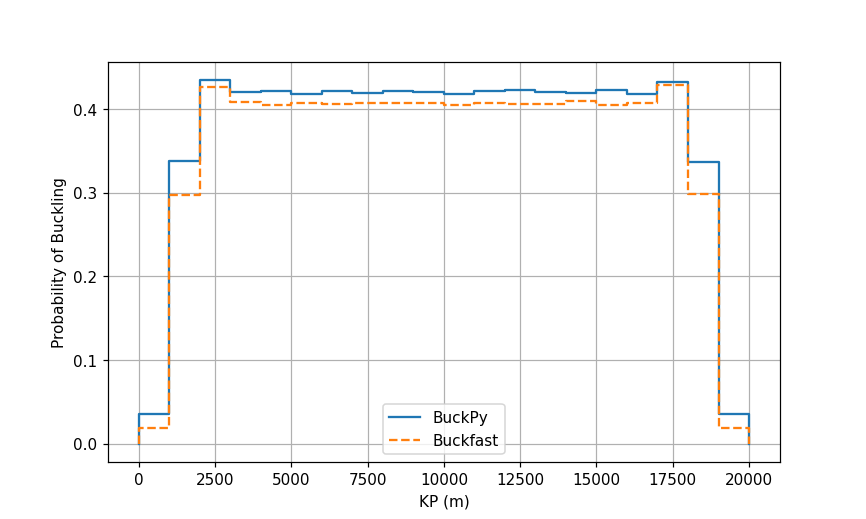
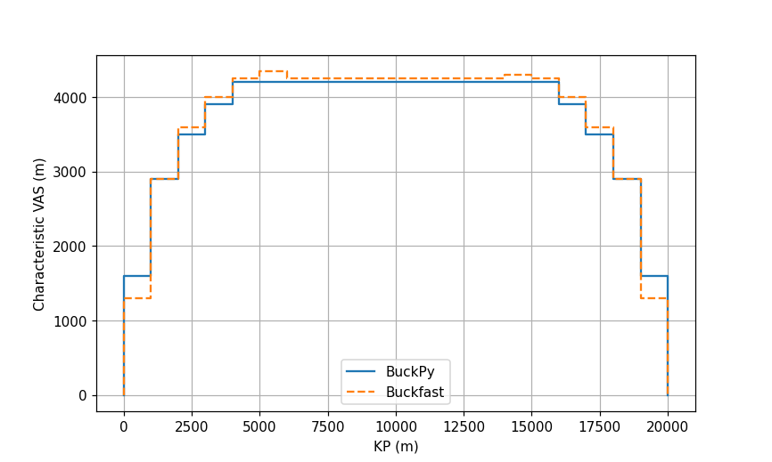
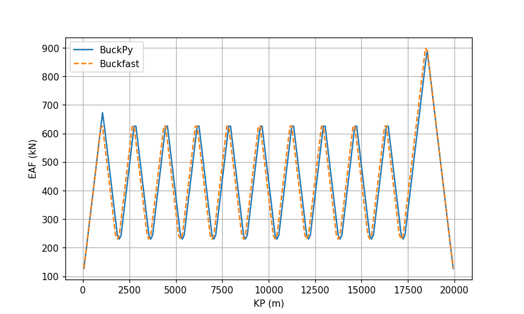
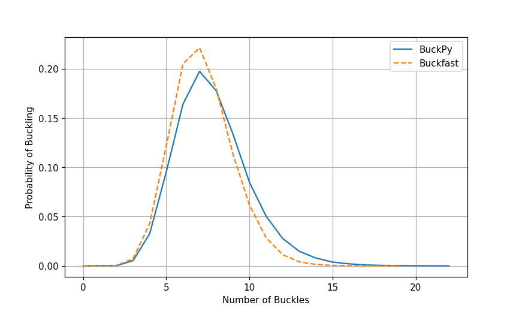
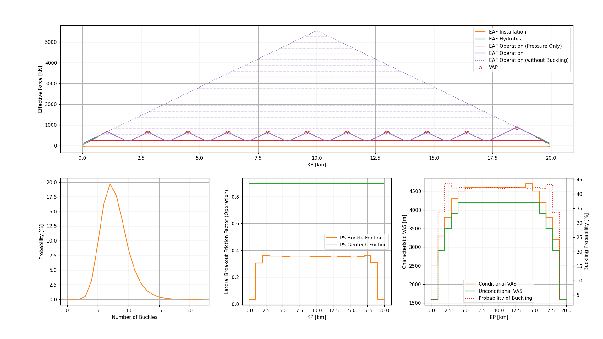
Buckfast File Writers#
Input File Writer#
buckfast_input_file_writer.pyreads the BuckPy input filebuckpy.xlsxand writes the Buckfast input file in the same format as the Buckfast manual.There is an option
DEFAULT_OUTPUTto use the default values or self-defined values when writing the*OUTPUTsection.The benchmark comparison using Buckfast example A is in the folder
.//docs//_static//buckfast
buckfast_A_example.csvis the example A from the Buckfast manual.
buckfast_A_scen1.csvis the Buckfast input file generated from the Buckpy input filebuckpy.xlsx.
Output File Writer - Buckfast Result File#
buckfast_output_file_compiler.pyreads the Buckfast result files and writes the results in a single Excel file. It can also compare the results of Buckfast and BuckPy either for each scenario or for all scenarios.Finally, it can write a summary table Excel file for the selected scenarios. The Buckfast output file has the following tabs:
Elements: This tab contains the probability of buckling and characteristic VAS outputs. This information is taken from the
.out2file.
Centroid of the Element (m): The KP value of the element centroid in the unit of m.
Number of Simulations with a Buckle: The number of simulations with a buckle.
Probability of Buckling: The probability of buckling in the simulation.
Probability of not Buckling: The probability of not buckling in the simulation.
Mean of the VAS (m): The mean of the VAS in the unit of m.
Standard Deviation of the VAS (m): The standard deviation of the VAS in the unit of m.
Minimum VAS (m): The minimum of the VAS in the unit of m.
Maximum VAS (m): The Maximum of the VAS in the unit of m.
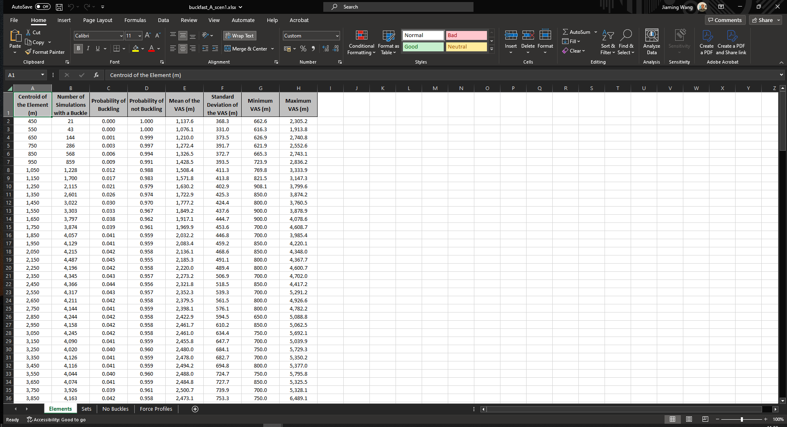
Sets: This tab contains the probability of buckling and characteristic VAS outputs. This information is taken from the
.out2file.
Set Label: The identifier of the post-processing set.
Number of Simulations with Buckles per Set: The number of simulations with buckles in each set.
Probability of Buckling: The probability of buckling in the set.
Probability of not Buckling: The probability of not buckling in the set.
Mean of the VAS (m): The mean of the VAS in the unit of m.
Standard Deviation of the VAS (m): The standard deviation of the VAS in the unit of m.
Minimum VAS (m): The minimum of the VAS in the unit of m.
Maximum VAS (m): The Maximum of the VAS in the unit of m.
VAS, Conditional, Rogue (m): The conditional characteristic VAS of rogue buckles in the unit of m.
Characteristic VAS, Unconditional, Rogue (m): The unconditional characteristic VAS of rogue buckles in the unit of m.
VAS, Conditional, Planned (m): The conditional characteristic VAS of planned buckles in the unit of m.
Characteristic VAS, Unconditional, Planned (m): The unconditional characteristic VAS of planned buckles in the unit of m.
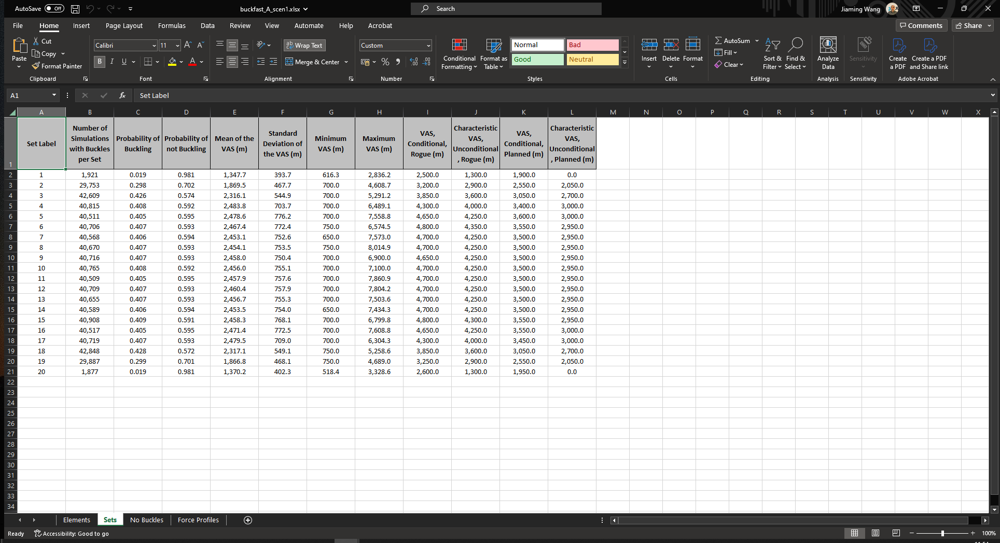
No Buckles: This tab contains the probability distribution of the total number of buckles along the pipeline route. This information is taken from the
.out2file.
Number of Buckles: The number of buckles.
Number of Simulations: The number of simulations with buckles.
Probability of Buckling: The probabilities of buckling.
Cumulative Probability of Buckling: The cumulative probabilities of buckling.
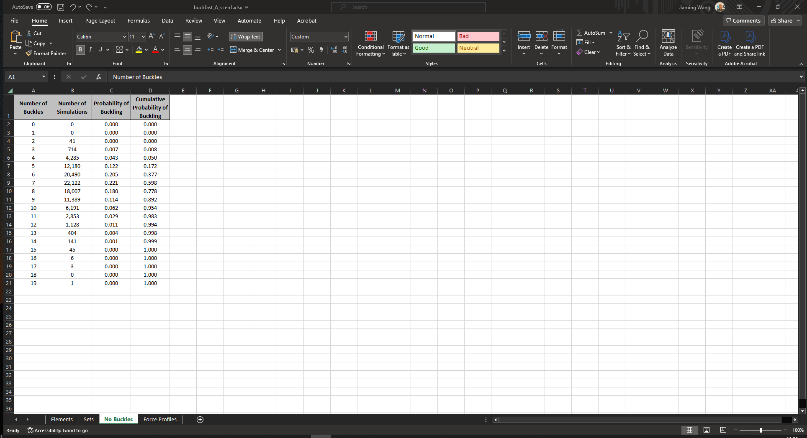
Force Profiles: This tab contains the effective axial force profiles. This information is taken from the
.out1file.
KP (m): The KP value of the element centroid in the unit of m.
CBF Hydrotest (kN): The concentrated buckling force during hydrotest in the unit of kN.
CBF Operation (kN): The concentrated buckling force during operation in the unit of kN.
EAF Installation [RLT] (kN): The effective axial force during installation in the unit of kN.
EAF Hydrotest (kN): The effective axial force during hydrotest in the unit of kN.
EAF Operation (kN): The effective axial force during operation in the unit of kN.
EAF Operation [without Buckling] (kN): The effective axial force during operation without buckling in the unit of kN.
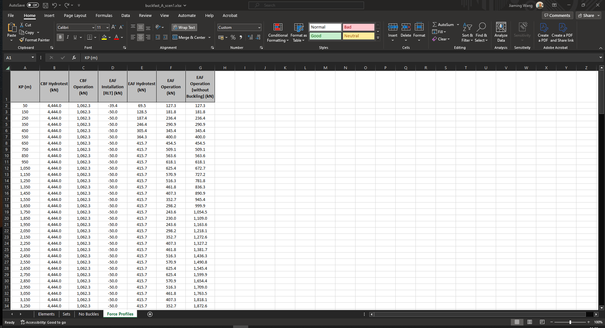
Output File Writer - Summary Table File#
The Buckfast output file has the following tabs:
Buckling: This tab contains the probability of buckling and number of buckles results of Buckfast and BuckPy.
Pipeline: Pipeline of the input file analysed.
Scenario: Scenario or sensitivity of the input file analysed.
Scenario Description: The description of each simulation scenario.
Buckfast - Probability of Buckling: The probability of buckling in the Buckfast result.
Buckfast - Number of Buckles - Min: The minimum number of buckles in the Buckfast result.
Buckfast - Number of Buckles - Mode: The most likely number of buckles in the Buckfast result.
Buckfast - Number of Buckles - Max: The maximum number of buckles in the Buckfast result.
BuckPy - Probability of Buckling: The probability of buckling in the BuckPy result.
BuckPy - Number of Buckles - Min: The minimum number of buckles in the BuckPy result.
BuckPy - Number of Buckles - Mode: The most likely number of buckles in the BuckPy result.
BuckPy - Number of Buckles - Max: The maximum number of buckles in the BuckPy result.
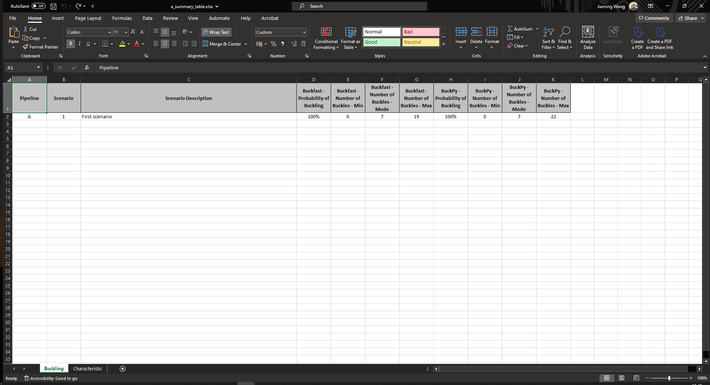
Characteristic: This tab contains the probability of buckling and characteristic VAS results of Buckfast and BuckPy. It also contains the characteristic peak lateral friction, and maximum characteristic VAS and friction results of BuckPy.
Pipeline: Pipeline of the input file analysed.
Scenario: Scenario or sensitivity of the input file analysed.
Scenario Description: The description of each simulation scenario.
Element Set - Identifier: The identifier of the post-processing element set.
Element Set - KP From (m): The KP of the start of the pipeline section in the unit of m.
Element Set - KP To (m): The KP of the end of the pipeline section in the unit of m.
Buckfast - Probability of Buckling: The probability of buckling in the Buckfast result.
Buckfast - Characteristic VAS (m): The unconditional characteristic VAS of rogue buckles in the unit of m.
BuckPy - Probability of Buckling: The probability of buckling in the BuckPy result.
BuckPy - Characteristic VAS (m): The unconditional characteristic VAS in the unit of m.
BuckPy - Characteristic Peak Lateral Friction: The unconditional characteristic lateral breakout friction factor.
Buckfast - Max Char. VAS (m): The maximum characteristic VAS of each scenario in the Buckfast result.
BuckPy - Max Char. VAS (m): The maximum characteristic VAS of each scenario in the BuckPy result.
BuckPy - Max Char. Friction: The maximum characteristic friction of each scenario in the BuckPy result.
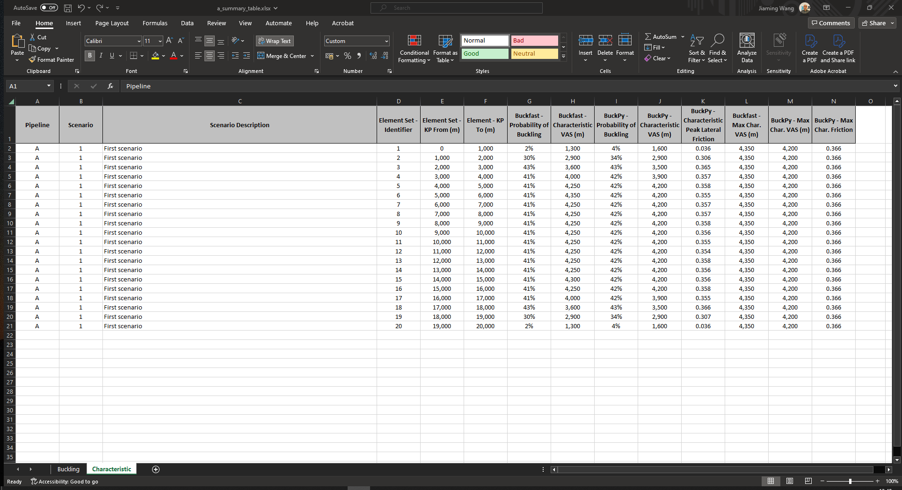
Saipem Pro-Buck Benchmarking#
The benchmark between BuckPy and Saipem Pro-Buck can be found in the disccusion with Alberto Battistini
BuckPy and Saipem ProBuck Benchmark #35.The Pro-Buck program is a MATLAB-based tool designed to analyze the likelihood of buckling in pipelines subjected to axial loads induced by pressure and temperature. Pro-Buck calculates critical buckling loads (CBL) and provides valuable insights into the critical points where buckling might occur due to excessive compression or other related forces. The algorithm performs Monte Carlo simulations to capture VAS and frictional forces of buckles. The program generates detailed results, including CBL, virtual axial spacing (VAS), and pipeline expansion, which can be visualized using MATLAB’s graphing tools.
The latest revision of Pro-Buck introduces an approach that makes minimal changes to the DNV-RP-F110 recommendations. It uses a Monte Carlo algorithm to determine soil friction distributions at expected buckling locations. This methodology addresses limitations in the DNV-RP-F110 approach by separately sampling lateral friction and Out-of-Straightness (OOS) factors, leading to significant cost savings and improved design reliability.
Pro-Buck is a powerful tool for predicting buckling risks and ensuring the structural integrity of pipelines under various conditions.
General information about the pipeline for Benchmarking:
155 approx km Pipeline with straight sections and route bends
7 pipe set
9 Friction set
The two codes yield identical results in the following three figures:
Probability of buckling versus KP
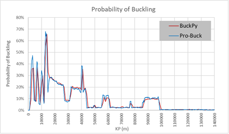
Number of Buckles
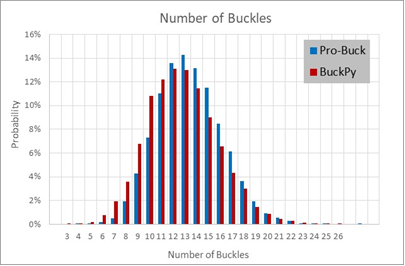
Conditional Friction Factor versus KP
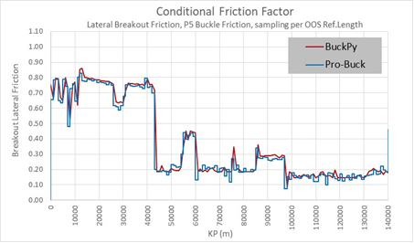